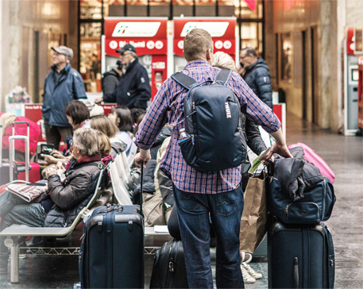

<!DOCTYPE html>
<html>
  <link rel="stylesheet" href="css/styles.css">
</html>
<body>
  <header class="header">
    <div class="logo"><a href="#"><span>.</span>YES</a></div>
    <address class="address">г. Москва ул. Северная, 35</address><a class="phone-number" href="tel:+7945465467">+7 (945) 46-54-67</a>
    <button class="btn">Заказать звонок</button>
  </header>
  <div class="banner">
    <div class="banner-container">
      <div class="promo"><span class="promo-header">Ускоренный</span>
        <h2 class="promo-header">2-месячный курс английского языка</h2>
        <p class="promo-text">Освойте английский для путешествий<br> и научитесь объясняться в любой ситуации</p>
        <button class="promo-btn">Записаться на пробное занятие</button>
      </div>
    </div>
  </div>
  <div class="features">
    <div class="features-wrapper">
      <h2>Бывали ли вы в подобных ситауциях <span class="styled">?</span></h2>
      <ol class="trouble">
        <li>
          <p>Вы думали, что знаете английский, но в гостинице с трудом выговариваете, какой номер вам нужен</p>
        </li>
        <li>
          <p>Вы смогли спросить,<br> до какой станции метро нужно дойти, но не поняли, куда вас отправили</p>
        </li>
        <li>
          <p>В аэропорту при любом подозрении на задрежку, вы ищите представителя, хоть как-то говоряшего по-русски</p>
        </li>
        <li>
          <p>Все это портит впечатление от отдыха и отбивает желание посещать новые страны</p>
        </li>
      </ol>
      <div class="advantages">
        <h2>Мы предусмотрели эти ситуации</h2>
        <ul>
          <li> 
            <h4>Значение</h4>
            <p>Разбираем те ситуации, с которыми сталкивается путешественник</p>
          </li>
          <li> 
            <h4>Понимание</h4>
            <p>Учим объясняться сами и понимать, что говорят другие</p>
          </li>
          <li>
            <h4>Практика</h4>
            <p>Проводим диалоги с преподавателями и носителями языка</p>
          </li>
        </ul>
      </div>
    </div>
  </div>
  <div class="teachers">
    <h2>Кто ведет курс</h2>
    <ul>
      <li>
        <h4>Алла Ристовская</h4>
        <p>Занимается преподаванием английского языка с 2007 года. За 7 лет практики Алла занималась более чем с 80 студентами. Очень любит путешествовать: неоднократно бывала зарубежом, проходила практику в США (Нью-Йорк) и Великобритании (Лондон).</p>
      </li>
      <li>
        <h4>Анастасия Левчук</h4>
        <p>Закончила Алтайскую Государственную педагогическую Академию по специальности "теория и методика преподавания иностранных языков и культур". Также имеется дополнительная квалификация "переводчик в сфере профессиональной коммуникации".</p>
      </li>
      <li>
        <h4>Евгений Пак</h4>
        <p>Сетифицированный спеуиалист (диплом ОмГПУ, TTC в Кембридже, TESOL в Лондоне). Имеет богатый опыт работы на английском языке: от обучения в языковых школах до выполнения функции переводчика на различных конференциях. Более года Евгений жил в г. Сиэтл (США).</p>
      </li>
    </ul>
  </div>
  <div class="pricing">
    <h2>что входит в стоимость <span class="styled">?</span></h2><span class="price">21 000 рублей</span>
    <p>Вы пройдете 2-месячную программу по 2 занятия в неделю, в конце каждой из которых сможете самостоятельно построить диалог</p>
    <ul>
      <li>
        <h4>1 неделя - аэропорт</h4>
        <p>Вылет-прилет, регистрация, специальный и пограничный, потеря багажа, задержка рейса</p>
      </li>
      <li>
        <h4>2 неделя - дорога, трансфер</h4>
        <p>Поиск транспорта, пункты назначения, общение с водителем (уточнения, просьбы, остановки)</p>
      </li>
      <li>
        <h4>3 неделя - гостиница, ночлег</h4>
        <p>Поиск ночлега, бронирование, уточнение условий проживания, решение проблем с персоналом</p>
      </li>
      <li>
        <h4>4 неделя - культурный отдых</h4>
        <p>Покупка билетов, туров, уточнение обстоятельств, потеря напарника, сопровождающего.</p>
      </li>
      <li>
        <h4>5 неделя - местность, поиск</h4>
        <p>Выяснение дороги, направления,  местонахождения (собственного и необходимых мест)</p>
      </li>
      <li>
        <h4>6 неделя - магазины</h4>
        <p>Выбор, общение с продавцами, выяснение цены, торг, покупка, возврат, случаи мошеничества</p>
      </li>
      <li> 
        <h4>7 неделя - общение с местными</h4>
        <p>Непринужденные беседы, вопросы, просьбы о помощи, совместный обед, времяпрепровождения</p>
      </li>
      <li>
        <h4>8 неделя - неожиданные ситуации</h4>
        <p>Разбор непредвиденных случаев (потеря документов, обращение в полицию, скорую)</p>
      </li>
    </ul>
  </div>
  <div class="program">
    <h2>Как все будет проходить</h2>
    <ul>
      <li>
        <h4>Простое запоминание</h4>
        <p>Слова запоминаются в результате упрощенных техник и применения в спонтанных ситуациях, а не посредством зубрежки</p>
      </li>
      <li>
        <h4>Импровизация и диалоги</h4>
        <p>Форма импровизации позволяет подготовиться к ситуации, когда шаблонные ответы будут неприменимы</p>
      </li>
      <li>
        <h4>Говорим и слушаем</h4>
        <p>Прослушивание себя и профессионалов позволит научиться воспринимать чужую речь на слух</p>
      </li>
      <li>
        <h4>Повторение</h4>
        <p>Каждое следующее занятие включает в себя закрепление предыдущих тем и создает базу для прохождения следующих</p>
      </li>
    </ul>
  </div>
  <div class="reviews">
    <h2>Отзывы студентов</h2>
    <div class="review-card">
      <h4>Александра Иванова</h4>
      <p>Курс прошел незаметно и оставил после себя только хорошие воспоминания. Нашу группу на постоянной основе вела Алла, Настя и Женя приходили к нам для нарабатывания практики общения. Неделю назад были с мужем в Лондоне - хоть люди разные и речь у всех разная, но было так легко и спокойно! Мы ни разу не заблудились, в аэропорту меня водила за собой пожилая пара в качестве переводчика. Спасибо вам, это было очень полезно!</p><a class="review-card--contact" href="#">Вконтакте</a>
    </div>
    <div class="reviews--control">
      <slider></slider>
    </div>
  </div>
  <div class="signup">
    <h2>бесплатное пробное занятие</h2>
    <p>Приходите на бесплатное первое занятие по теме “аэропорт” и ощутите пользу сразу!</p>
    <button>Записаться на пробное занятие</button>
  </div>
  <footer>
    <div class="footer-logo">
      <div class="a">.yes</div>
    </div>
    <div class="social"><a href="#">vk</a><a href="#">instagramm</a><a href="#">youtube</a><a href="#">ok</a></div><span>Школа  Английского Языка</span>
    <address>г. Москва ул. Северная, 35</address><a href="tel:+7945465467">+7 (945) 46-54-67</a>
    <button>Заказать звонок</button>
  </footer>
</body>